What the rig team gets
O que a equipe da sonda recebe
A single web page your rig team opens in any browser. Load the latest forecast and the results appear in seconds.
Uma única página web que a equipe abre em qualquer navegador. Carregue a previsão mais recente e os resultados aparecem em segundos.
Uses the forecast you already get
Usa a previsão que você já recebe
Drop in the DTN Marine Daily Planner, as the PDF or the e-mail itself. No new weather service, no data entry.
Solte o DTN Marine Daily Planner, em PDF ou o próprio e-mail. Sem novo serviço de meteorologia, sem digitação.
Motions for every forecast step
Movimentos para cada passo da previsão
Heave at the MRU and at the drill floor, pitch and roll, as significant values and 3-hour maxima, colour-coded against reference levels.
Heave no MRU e no drill floor, pitch e roll, como valores significativos e máximos em 3 horas, com cores por níveis de referência.
Best heading and scenarios
Melhor aproamento e cenários
The heading with the lowest worst-case motion, compared with bow to the dominant swell and bow to the wind, or the heading your DPO plans to hold.
O aproamento com o menor movimento no pior caso, comparado com proa para o swell dominante e proa para o vento, ou o aproamento que o DPO pretende manter.
Helideck status light
Luz de status do heliponto
NORMAM-27 limits for AW139 and S-92: the most likely outcome, green or red, with its probability for each step.
Limites da NORMAM-27 para AW139 e S-92: o resultado mais provável, verde ou vermelho, com sua probabilidade para cada passo.
A picture the whole crew understands
Uma imagem que toda a equipe entende
Animated rig and heading envelope for planning meetings and toolbox talks, in English or Portuguese.
Sonda animada e envelope por aproamento para reuniões de planejamento e DDS, em inglês ou português.
Nothing to install
Nada para instalar
Runs entirely in the browser. The forecast you load is processed on your own computer and is not sent anywhere.
Roda inteiramente no navegador. A previsão carregada é processada no seu próprio computador e não é enviada para lugar nenhum.
The page, as the rig team sees it
A página, como a equipe da sonda vê
Screens from the Petrobras 10000 page with the forecast issued on 18 Oct 2026.
Telas da página do Petrobras 10000 com a previsão emitida em 18 out 2026.
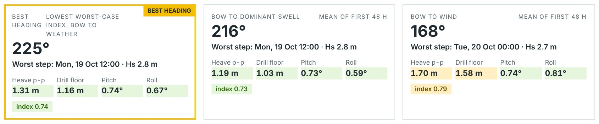
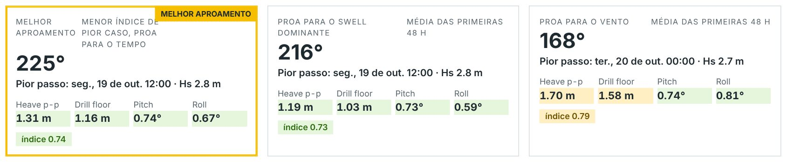
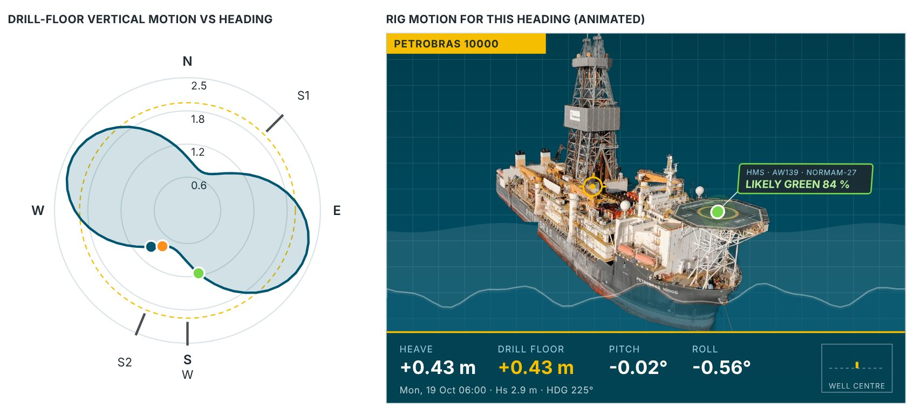
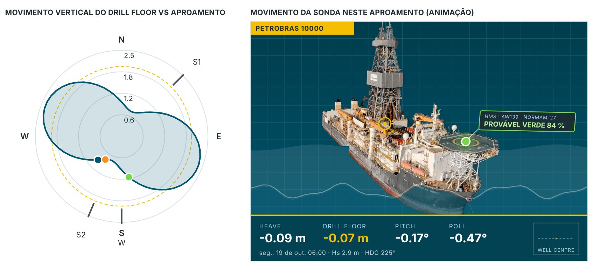
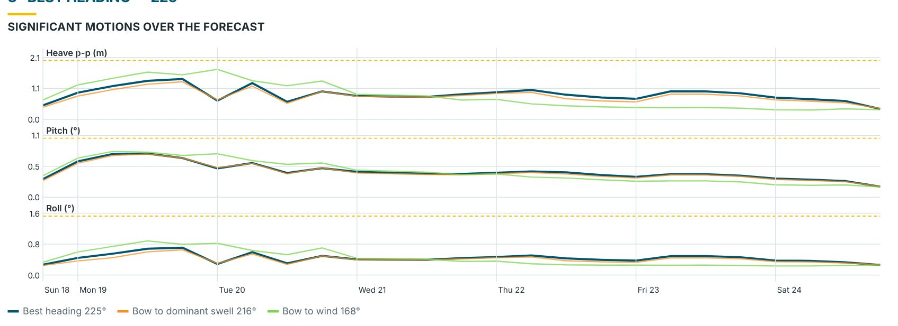
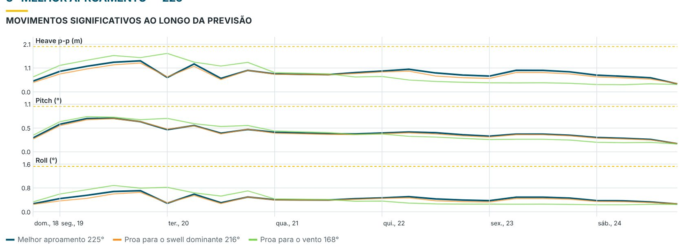
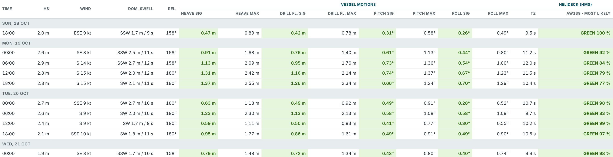
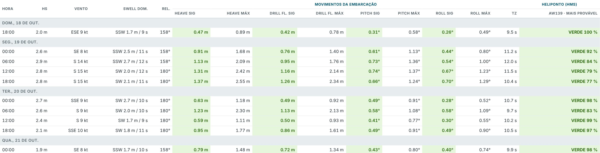
Tested against what the rig actually measured
Testado contra o que a sonda realmente mediu
Every number below compares the forecast-driven prediction with the rig's own sensors over the same hours: the motion reference unit (MRU) for heave, pitch and roll, and the helideck monitoring system (HMS) for the helideck.
Cada número abaixo compara a previsão gerada a partir da previsão do tempo com os sensores da própria sonda nas mesmas horas: a unidade de referência de movimento (MRU) para heave, pitch e roll, e o sistema de monitoramento do heliponto (HMS) para o heliponto.
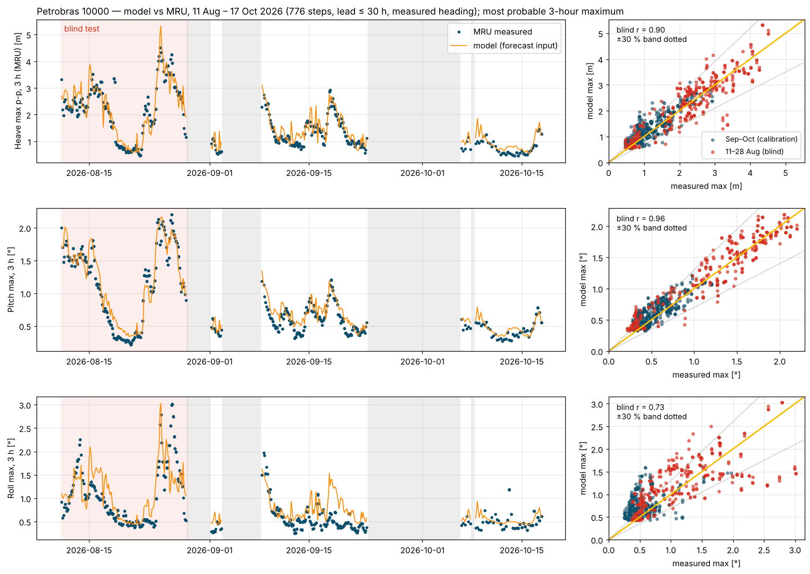
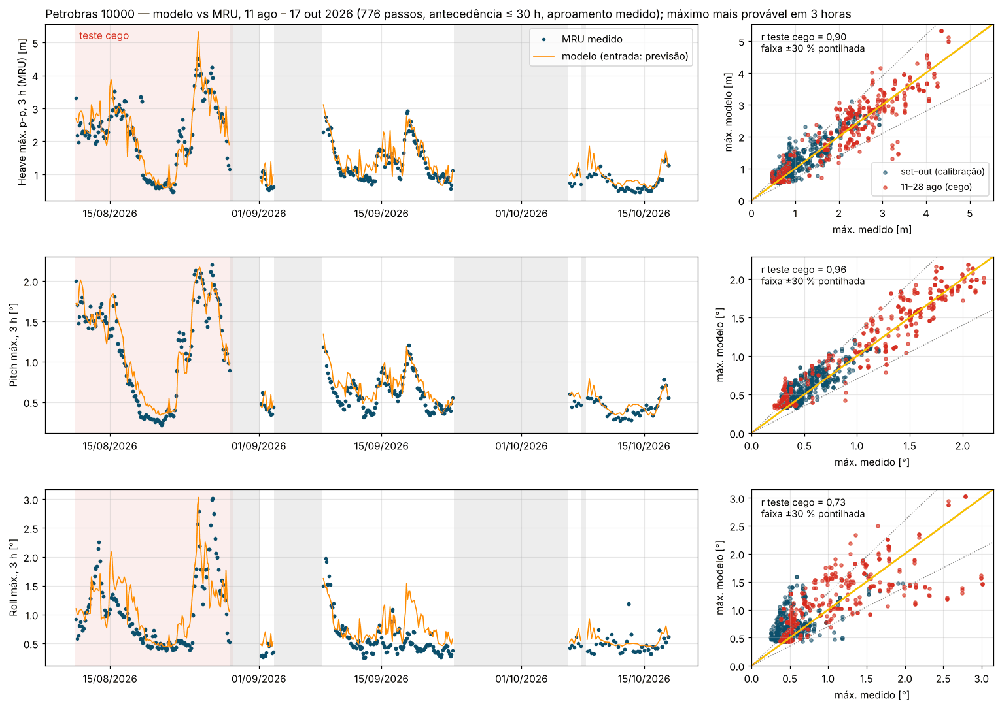
Blind test: 11–28 Aug 2026, 365 forecast steps, Hs up to 4.0 m
Teste cego: 11–28 ago 2026, 365 passos de previsão, Hs até 4,0 m
| MotionMovimento | CorrelationCorrelação | BiasViés | Within ±30 %Dentro de ±30 % | Within ±30 %, rough seasDentro de ±30 %, mar agitado | Largest value, measured / predictedMaior valor, medido / previsto | VerdictVeredito |
|---|---|---|---|---|---|---|
| Heave max, peak-to-peakHeave máx., pico a pico | 0.900,90 | +2 % | 83 % | 90 % | 4.5 / 5.3 m4,5 / 5,3 m | validatedvalidado |
| Pitch maxPitch máx. | 0.960,96 | +10 % | 77 % | 90 % | 2.2 / 2.2°2,2 / 2,2° | validatedvalidado |
| Roll maxRoll máx. | 0.730,73 | +13 % | 58 % | 51 % | 3.0 / 3.0°3,0 / 3,0° | indicative onlyapenas indicativo |
The model was frozen before this period and run on it unchanged. Rough seas: measured heave above about 1.9 m peak-to-peak (249 steps). A positive bias means the prediction is slightly on the safe side.
O modelo foi congelado antes deste período e rodado nele sem alterações. Mar agitado: heave medido acima de cerca de 1,9 m pico a pico (249 passos). Viés positivo significa que a previsão fica levemente a favor da segurança.
Largest real waves, sampled every 0.45 s (25 Aug 2026)
Maiores ondas reais, amostradas a cada 0,45 s (25 ago 2026)
| WindowJanela | Largest heave wave, peak-to-peak: predicted / measuredMaior onda de heave, pico a pico: prevista / medida | Significant heave: predicted / measuredHeave significativo: previsto / medido |
|---|---|---|
| 16:44–18:18, heading 170°16:44–18:18, aproamento 170° | 3.47 / 3.19 m3,47 / 3,19 m | 2.00 / 1.81 m2,00 / 1,81 m |
| 19:46–21:19, heading 150°19:46–21:19, aproamento 150° | 3.93 / 3.49 m3,93 / 3,49 m | 2.24 / 2.07 m2,24 / 2,07 m |
Checked wave by wave (418 and 442 waves): the predicted largest wave was 9–13 % above the real one, slightly on the safe side.
Verificado onda a onda (418 e 442 ondas): a maior onda prevista ficou 9–13 % acima da real, levemente a favor da segurança.
Month held out, both ways
Mês deixado de fora, nos dois sentidos
| MotionMovimento | Fit on Sep, test on Oct: correlation / within ±30 %Ajuste em set, teste em out: correlação / dentro de ±30 % | Fit on Oct, test on Sep: correlation / within ±30 %Ajuste em out, teste em set: correlação / dentro de ±30 % | VerdictVeredito |
|---|---|---|---|
| Heave | 0.79 / 57 %0,79 / 57 % | 0.85 / 79 %0,85 / 79 % | goodbom |
| Pitch | 0.77 / 89 %0,77 / 89 % | 0.82 / 59 %0,82 / 59 % | goodbom |
| Roll | 0.16 / 69 %0,16 / 69 % | 0.49 / 27 %0,49 / 27 % | indicative onlyapenas indicativo |
For reference, the forecast wave height alone correlates only 0.37 with the measured heave on the same data: the skill comes from turning the sea state into rig motion, not from the forecast height.
Como referência, a altura de onda da previsão sozinha tem correlação de apenas 0,37 com o heave medido nos mesmos dados: a habilidade vem de transformar o estado de mar em movimento da sonda, não da altura prevista.
Helideck vs the HMS: 18 Sep – 18 Oct 2026
Heliponto vs HMS: 18 set – 18 out 2026
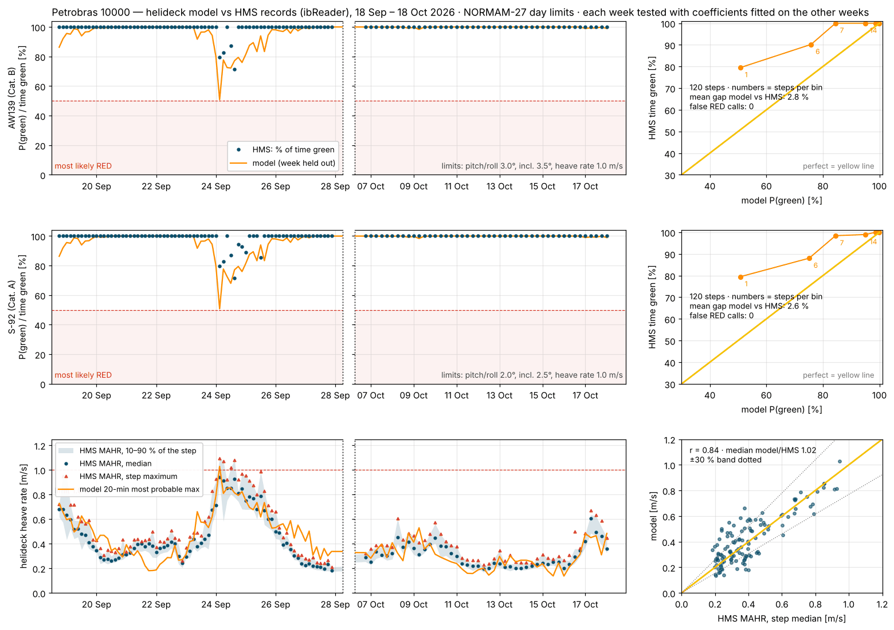
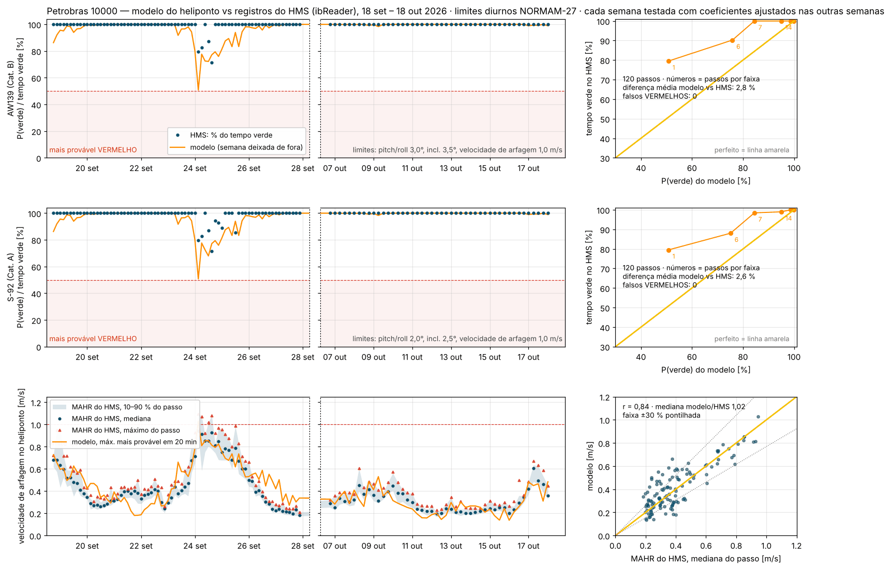
| Aircraft limits (NORMAM-27, day)Limites da aeronave (NORMAM-27, dia) | StepsPassos | Mean gap, predicted vs actual green timeDiferença média, tempo verde previsto vs real | Within ±10 pointsDentro de ±10 pontos | False red callsFalsos vermelhos | VerdictVeredito |
|---|---|---|---|---|---|
| AW139, Cat. B | 120 | 2.8 points2,8 pontos | 90 % | 0 | validated in this rangevalidado nesta faixa |
| S-92, Cat. A | 120 | 2.6 points2,6 pontos | 91 % | 0 | validated in this rangevalidado nesta faixa |
Predicted vs HMS helideck heave rate: correlation 0.84, median ratio 1.02.
Arfagem do heliponto prevista vs HMS: correlação 0,84, razão mediana 1,02.
What it does not do (yet)
O que ainda não faz
- Roll is indicative only. Roll was tracked less well than heave and pitch (blind-test correlation 0.73, 0.16–0.49 with a month held out), so the page labels it as indicative.O roll é apenas indicativo. O roll foi acompanhado com menos precisão que heave e pitch (correlação 0,73 no teste cego, 0,16–0,49 com um mês deixado de fora), por isso a página o marca como indicativo.
- Pitch with the swell on the beam runs about a third high, which is small in degrees (0.05° on average) and on the safe side.Pitch com o swell de través fica cerca de um terço alto, o que é pouco em graus (0,05° em média) e a favor da segurança.
- Helideck red calls are not yet proven. In the test month the deck was never mostly red in any 3-hour step; the roughest step was predicted at 51 % green against 80 % actual, so the tool leans slightly cautious.As indicações de vermelho do heliponto ainda não estão comprovadas. No mês de teste o heliponto nunca ficou majoritariamente vermelho em nenhum passo de 3 horas; o passo mais severo foi previsto com 51 % de verde contra 80 % real, então a ferramenta pende levemente para o lado conservador.
- Validated range: significant wave height 1.1–4.0 m and heave up to 4.5 m peak-to-peak (3-hour maximum), swell from every direction. Beyond that it has not been checked.Faixa validada: altura significativa de onda 1,1–4,0 m e heave até 4,5 m pico a pico (máximo em 3 horas), swell de todas as direções. Acima disso não foi verificado.
- It is a planning aid. It does not replace the HMS, the DP system or the judgement of the DPO and the aircraft commander.É uma ajuda ao planejamento. Não substitui o HMS, o sistema de DP nem o julgamento do DPO e do comandante da aeronave.
A page for your rig
Uma página para a sua sonda
Each page is built for one rig and checked against that rig's own records before it is handed over, the same way the results above were produced.
Cada página é feita para uma sonda e verificada contra os registros da própria sonda antes da entrega, da mesma forma que os resultados acima.
You share the records
Você compartilha os registros
A few weeks of the forecasts you receive, your rig's motion and helideck logs for the same period, and the basic vessel documents.
Algumas semanas das previsões que você recebe, os registros de movimento e do heliponto da sonda no mesmo período e os documentos básicos da embarcação.
Your page is tuned and tested
Sua página é ajustada e testada
The page is fitted to your rig and then tested on a period it has not seen. You get the results in a validation report like the one above.
A página é ajustada à sua sonda e depois testada num período que ela não viu. Você recebe os resultados num relatório de validação como o acima.
Your team uses it
Sua equipe usa
A private link for your rig team, in English and Portuguese, with your forecast pre-loaded each week if you wish.
Um link privado para a equipe da sonda, em inglês e português, com a sua previsão pré-carregada toda semana, se desejar.
Interested in a page for your rig? Talk to Gabriel Cunha.
Interessado numa página para a sua sonda? Fale com Gabriel Cunha.